语脉新手使用手册
用真实软件截图带你认识语脉：从导入资料、闪卡复习、阅读考试，到翻译挑战、AI 写作、笔记沉淀、学习流和 Agent。第一次打开也能照着走。
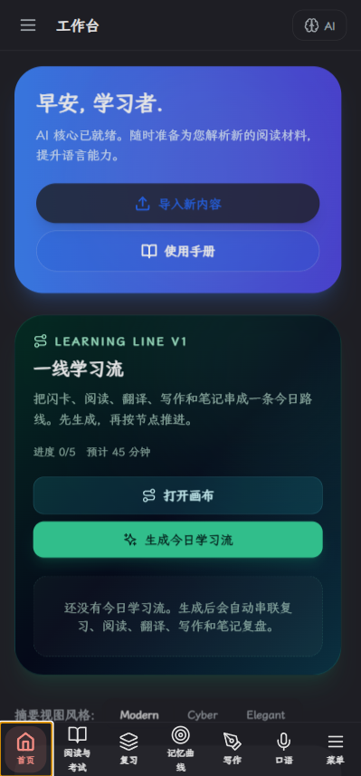
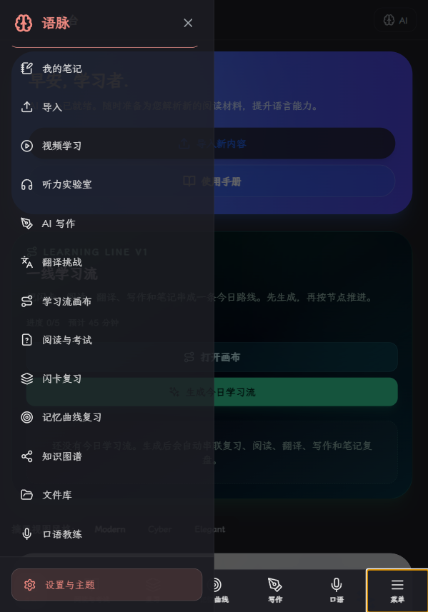
先看懂底栏和菜单
移动端底部保留最高频入口。找不到某个功能时，先点右下角“菜单”。
- 常用训练从底栏进入。
- 管理类、低频功能从菜单进入。
- 页面太挤时，先检查是否打开了 AI 侧栏或抽屉。
工作台：今日学习入口
工作台是总入口。你可以在这里导入新内容、打开学习流，或者快速进入今日训练。
- 第一次打开后，先去设置确认 AI 服务是否可用。
- 已有文章或词表时，点击“导入新内容”。
- 想按路线学习时，使用“一线学习流”。
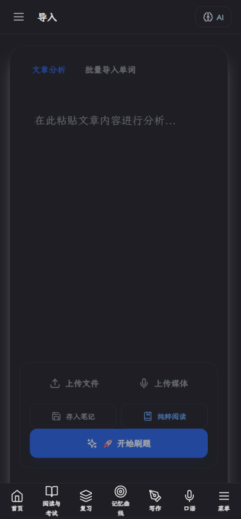
导入：把资料放进系统
导入页面负责把文章、单词、文本材料变成可训练内容。文章可以进入阅读，词表可以生成闪卡。
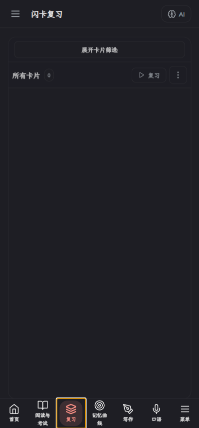
闪卡复习：先把新词过一遍
闪卡适合新词学习和短期巩固。选一个文件夹或范围，点击复习，然后根据掌握程度评分。
- 选择“所有卡片”或某个文件夹。
- 点击“复习”开始。
- 翻面后选择忘记、困难、良好或简单。
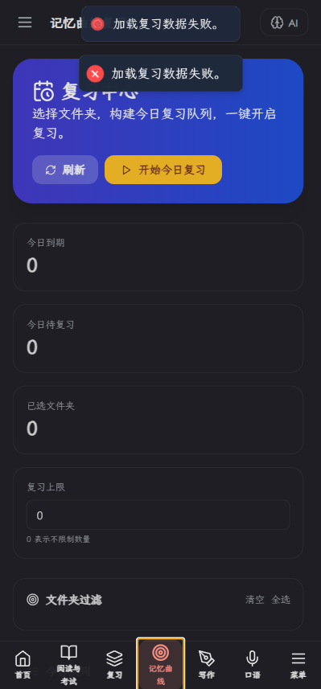
记忆曲线：处理真正该复习的词
记忆曲线会根据到期时间、掌握程度和历史记录安排复习。它更适合长期巩固，而不是第一次学习。
- 新词先用闪卡复习。
- 学过的词用记忆曲线复习。
- 时间少时，优先做今日到期内容。
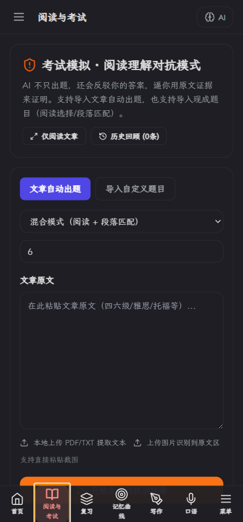
阅读与考试：答案必须回到原文
这个模块用于阅读文章、做理解题、段落匹配、证据反驳和生词标记。核心不是刷题，而是训练“我为什么选这个”。
- 导入或粘贴文章。
- 选择题型并开始训练。
- 提交后查看证据句和错因。
- 不理解时进入证据反驳。
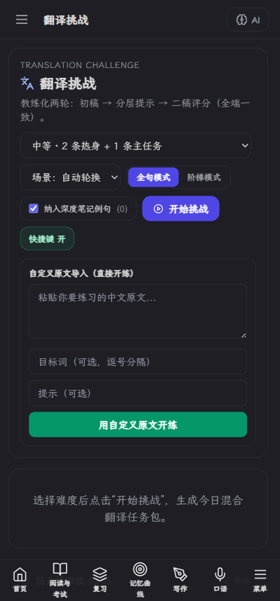
翻译挑战：先写，再改，再评分
翻译挑战采用两轮训练。第一版先表达，之后看分层提示自己修改，第二版再评分。
- 选择难度和场景后开始。
- 先写自己的版本，再看提示。
- 评分关注忠实度、自然度、语法、目标词和语气。
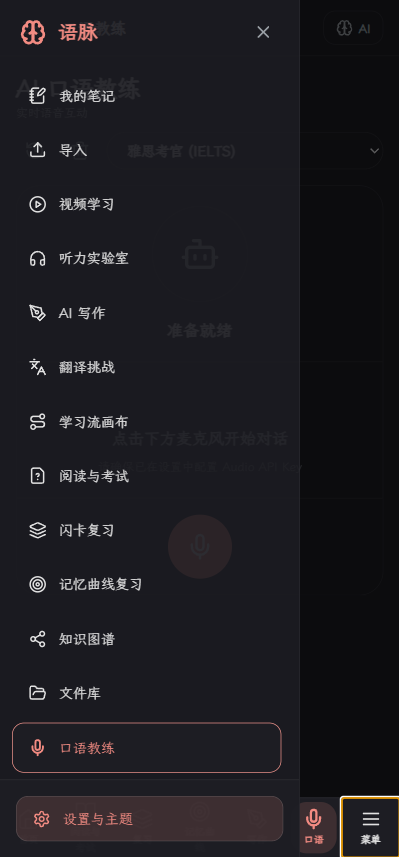
AI 写作：审题、提纲、写作、诊断
写作台不是简单代写，而是帮你把作文拆成可训练流程。你可以让 AI 帮忙审题和诊断，但正文建议保留自己的表达。
- 先输入题目和考试目标。
- 生成或手写提纲。
- 写正文，必要时插入素材包。
- 最后诊断并修改。
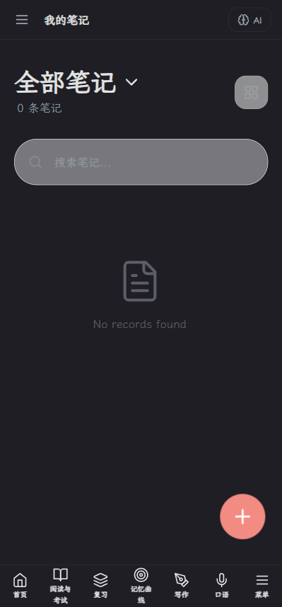
我的笔记：沉淀长期知识
笔记用于保存深度笔记、阅读总结、错题整理和学习复盘。它是你的长期知识库。
- 重要单词可以保存成深度笔记。
- 疑难句可以整理成句法笔记。
- 使用 [[笔记标题]] 可以建立笔记内链。
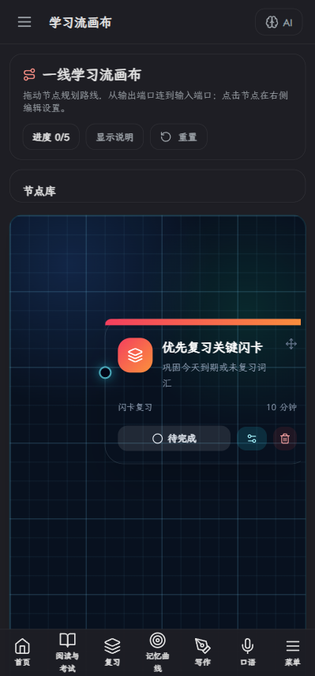
学习流画布：把模块连成路线
学习流像工作流工具。你可以把闪卡、阅读、翻译、写作、笔记连起来，形成一条今日学习路线。
- 节点代表一个学习任务。
- 连线代表顺序或数据流。
- AI 大脑可以分析上游结果并推荐下一步。
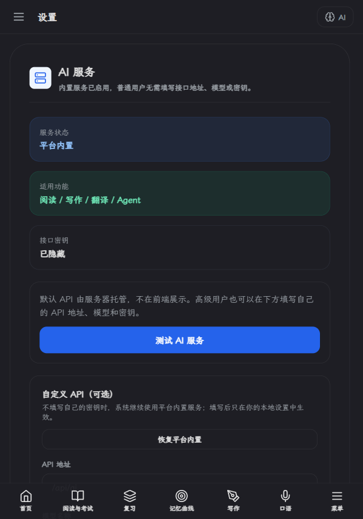
设置：确认 AI 服务和主题
设置页用于管理主题、AI 服务、模型、图片总结和个性化选项。AI 功能异常时，优先检查这里。
- 平台内置服务会隐藏密钥。
- 高级用户也可以填写自己的 API。
- 网页端保护默认 API 通常需要后端代理。
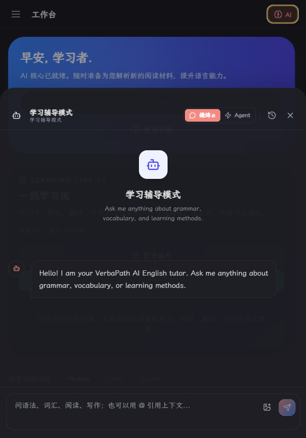
AI Agent：让 AI 帮你操作软件
Agent 可以读取学习数据、生成计划、整理笔记、规划复习，也能在部分模块里执行操作。
- 用具体指令描述目标。
- 涉及批量操作时，先看计划和影响范围。
- 执行后检查结果，必要时撤销。
推荐的新手路径
如果你不知道从哪里开始，可以按这条路线走一遍。它能把语脉的核心闭环串起来。
AI 没反应怎么办？
先检查设置页里的 API URL、API Key 和模型名称。如果是网页部署版，还要确认是否配置了后端代理。
导入后为什么没马上看到内容？
导入内容会进入对应模块。单词通常进入闪卡，文章进入阅读或文件库。导入后建议去对应模块检查。
闪卡为什么会重复出现？
记忆曲线会根据掌握程度和到期时间安排复习。忘记或困难的卡片会更快回来。
素材包是不是让 AI 替我写？
不是。素材包是表达工具箱，用来升级句子、连接逻辑和积累表达。核心作文仍建议自己写。